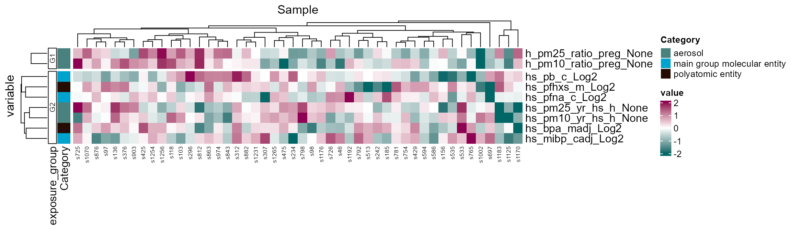
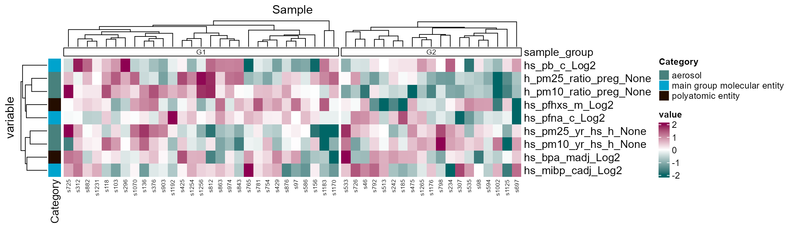

Exposure/Sample Clustering
Jason Laird
Source:vignettes/articles/exposure_sample_clustering.Rmd
exposure_sample_clustering.Rmd- Understand which exposures/samples are correlated with one another.
- Determine if exposures/samples cluster into groups.
Co-exposure
Exposures rarely occur in isolation, and at any given time, we are exposured to many different exposures. Here we provide code to see which exposures co-occur together.
Prerequisites
We covered exposure preprocessing in a previous vignette. Here is the quick start code from that vignette to get you going:
Click to expand code
# Load Libraries
library(tidyverse)
library(tidyexposomics)
# Load example data
data("tidyexposomics_example")
# Create exposomic set object
expom <- create_exposomicset(
codebook = tidyexposomics_example$annotated_cb,
exposure = tidyexposomics_example$meta
)
# Grab exposure variables
exp_vars <- tidyexposomics_example$annotated_cb |>
filter(category %in% c(
"aerosol",
"main group molecular entity",
"polyatomic entity"
)) |>
pull(variable) |>
as.character()
# Impute missing values
expom <- run_impute_missing(
exposomicset = expom,
exposure_impute_method = "missforest",
exposure_cols = exp_vars
)
# Check variable normality
expom <- run_normality_check(
exposomicset = expom,
action = "add"
)
# Transform variables
expom <- transform_exposure(
exposomicset = expom,
transform_method = "boxcox_best",
exposure_cols = exp_vars
)Exposure Correlations
The run_correlation function identifies correlations
between exposure variables. We set feature_type to
exposures to focus on exposure variables and use a
correlation cutoff of 0.3 to filter for meaningful
associations. This cutoff can be adjusted based on your data and
analysis needs.
# Run correlation analysis
expom <- run_correlation(
exposomicset = expom,
feature_type = "exposures",
action = "add",
exposure_cols = exp_vars,
correlation_cutoff = 0
)To visualize the exposure correlations, we can use the
plot_circos_correlation function. Here we will plot the
circos plot. This function creates a circular plot of the exposure
correlations. The correlation_cutoff argument is used to
set the minimum correlation score for the association. Here we use a
cutoff of 0.3.
# Plot exposure correlation circos plot
plot_circos_correlation(
exposomicset = expom,
feature_type = "exposures",
corr_threshold = 0,
exposure_cols = exp_vars
)
Exposure Clusters
We can also visualize these these co-occurence patterns using a
heatmap as well. We can either specify the number of clusters or use a
method like diana through the
clustering_approach argument that will decide this for you.
Here we specify two exposure groups:
# Cluster exposures and plot
expom |>
run_cluster_exposures(
user_k = 2,
exposure_cols = exp_vars) |>
plot_clusters(
exposure_cols = exp_vars,
cluster_type = "exposure")
Here we note that there are two groups of exposures, mainly driven by PM2.5 levels during pregnancy.
Sample Clustering
We can also see this pattern by clustering samples as well:
# Cluster samples and plot
expom |>
run_cluster_samples(
user_k = 2,
exposure_cols = exp_vars) |>
plot_clusters(
exposure_cols = exp_vars,
cluster_type = "sample")